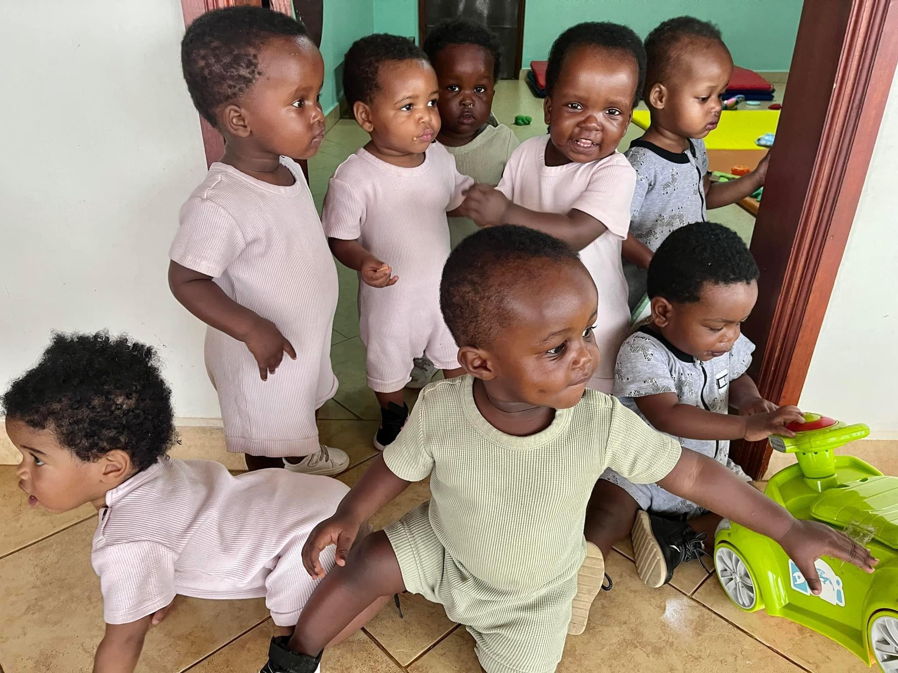

A Baby Home, Mothering Center, a Day Care for MAP moms who have special needs babies, and Opportunities to Serve for Volunteers, in Kampala, Uganda
Dolphin Foundation, Inc. is a registered non-profit in the USA and a registered NGO in Uganda
Dolphin Foundation, began as “Orphanage House” in 2006 as a rescue center for abandoned, orphaned and at risk babies in Kampala, Uganda, East Africa. During that time, hundreds of babies, have been rescued and most of those have either been adopted or returned to an extended family member. That is what Dolphin is all about, making new happy families.
These are some of our babies who have now grown up
Our mission is to help prevention of abandoned children by empowering the family unit and reconciling God’s children to him
Our vision is to reach out to the suffering children with the love of Christ.
Are you looking for a way to make a difference in the world, gain new experiences, or training for a future career?
Read more on VolunteerHelp financially with our needs, especially with sponsoring babies. All donations go directly to the costs of Dolphin village.
Click to see Dolphin BabiesWith your donation, Dolphin will have the ability to provide women an opportunity to become self-sufficient.
see on How to HelpOur babies have new wheels! It makes it so much easier to get them up to the Chapel. Thank you Sponsors
Donate now